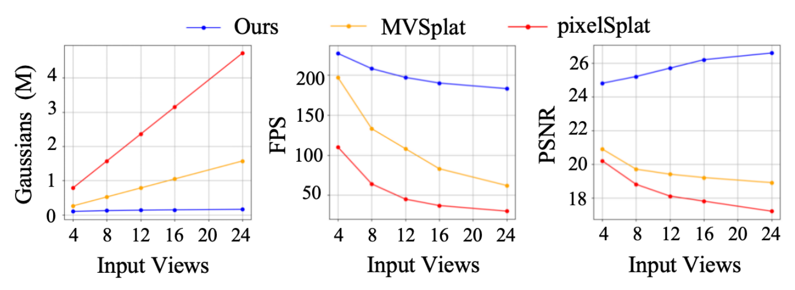
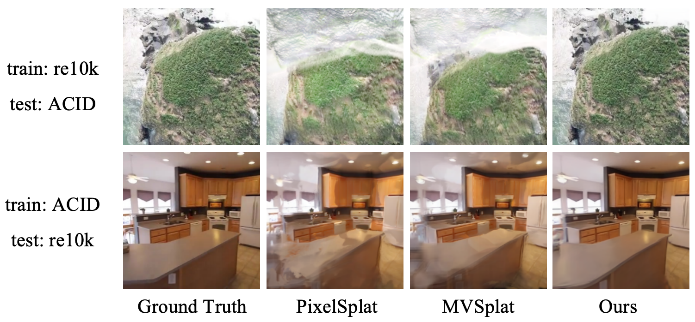

Abstract
3D Gaussian Splatting (3DGS) has demonstrated impressive novel view synthesis performance. While conventional methods require per-scene optimization, more recently several feed-forward methods have been proposed to generate pixel-aligned Gaussian representations with a learnable network, which are generalizable to different scenes. However, these methods simply combine pixel-aligned Gaussians from multiple views as scene representations, thereby leading to artifacts and extra memory cost without fully capturing the relations of Gaussians from different images. In this paper, we propose Gaussian Graph Network (GGN) to generate efficient and generalizable Gaussian representations. Specifically, we construct Gaussian Graphs to model the relations of Gaussian groups from different views. To support message passing at Gaussian level, we reformulate the basic graph operations over Gaussian representations, enabling each Gaussian to benefit from its connected Gaussian groups with Gaussian feature fusion. Furthermore, we design a Gaussian pooling layer to aggregate various Gaussian groups for efficient representations. We conduct experiments on the large-scale RealEstate10K and ACID datasets to demonstrate the efficiency and generalization of our method. Compared to the state-of-the-art methods, our model uses fewer Gaussians and achieves better image quality with higher rendering speed.
Network Architecture
Comparisons with State-of-the-art
We present qualitative comparisons with the following state-of-the-art models for novel view synthesis:
- pixelSplat: Pioneering feed-forward 3D Gaussians model that takes sparse views as input to predict Gaussian parameters by leveraging epipolar geometry and depth estimation.
- MVSplat: The latest feed-forward 3D Gaussians model that constructs a cost volume structure to directly predict depth from cross-view features, further improve the geometric quality.
Comparisons of Model Efficiency
Our Gaussian Graph achieves more effective 3D representations with significantly fewer Gaussians compared to previous pixel-wise methods, therefore leads to faster rendering speed. As shown in the figure below, GGN benefits from increasing input views, whereas both pixelSplat and MVSplat exhibits decline in performance. It is mainly because pixel-wise methods represent 3D scenarios with an excess of duplicate and unnecessary Gaussians.
Comparisons of Cross-dataset Generalization
Gaussian Graph Network consistently outperforms pixelSplat and MVSplat on cross-dataset generalization, especially on multi-view occasions. Here, we present the visualization result of cross-dataset settings, where we simply train our models on RealEstate10K or ACID dataset, and test on the other benchmark without any fine-tuning.
BibTeX
@article{Gaussian Graph Network,
title = {Gaussian Graph Network: Learning Efficient and Generalizable Gaussian Representations from Multi-view Images},
author = {Shengjun Zhang, Xin Fei, Fangfu Liu, Haixu Song, Yueqi Duan},
journal = {},
year = {2024},
}